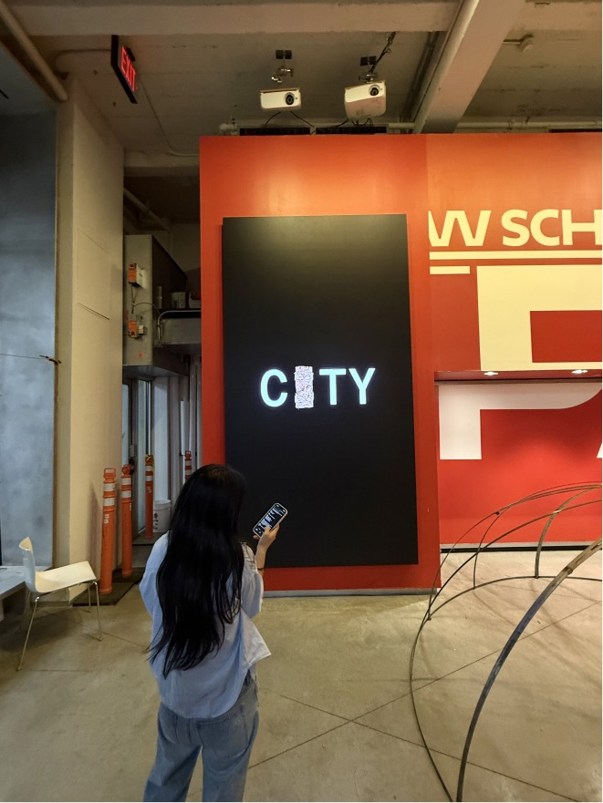

Side quests
Explorations
Experiments in interaction, AI-native workflows, and systems thinking, built to learn fast and test new directions.
IBFF
Digital Expression Fellowship
Open project ↗
Side quests
Experiments in interaction, AI-native workflows, and systems thinking, built to learn fast and test new directions.
